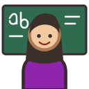

Unit 3
Say who you are and where you're from with ser, say what you're not with no, and ask who, how and where.
Yo, tú, él, ella; soy, eres, es; maestro or maestra; and asking questions.

Build sentences and questions from word tiles, and answer sí or no about a picture.
Hear a sentence and tap the stressed syllable of one of its words.